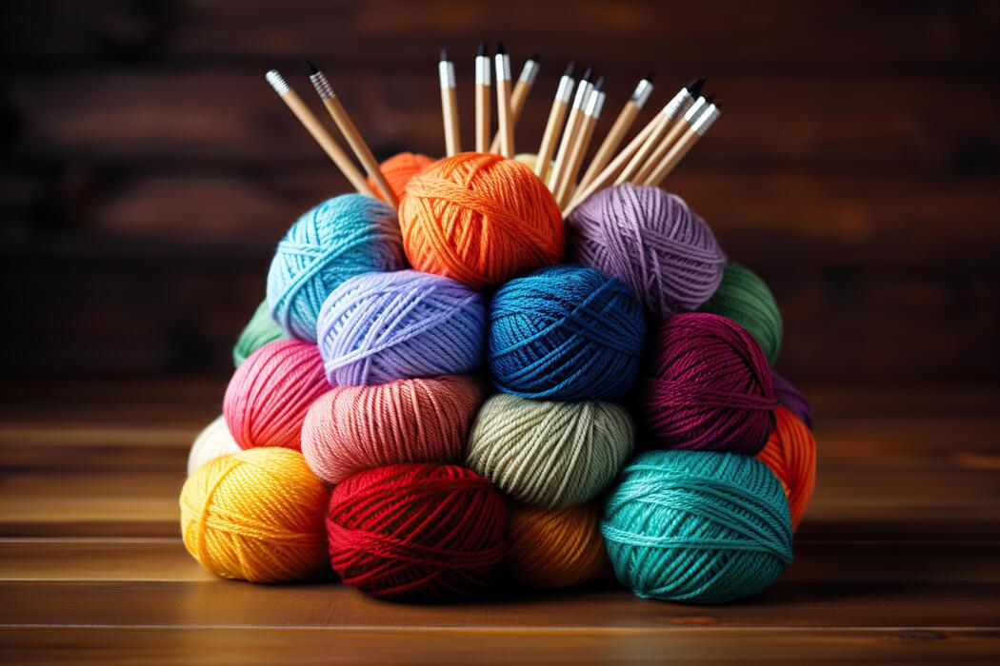
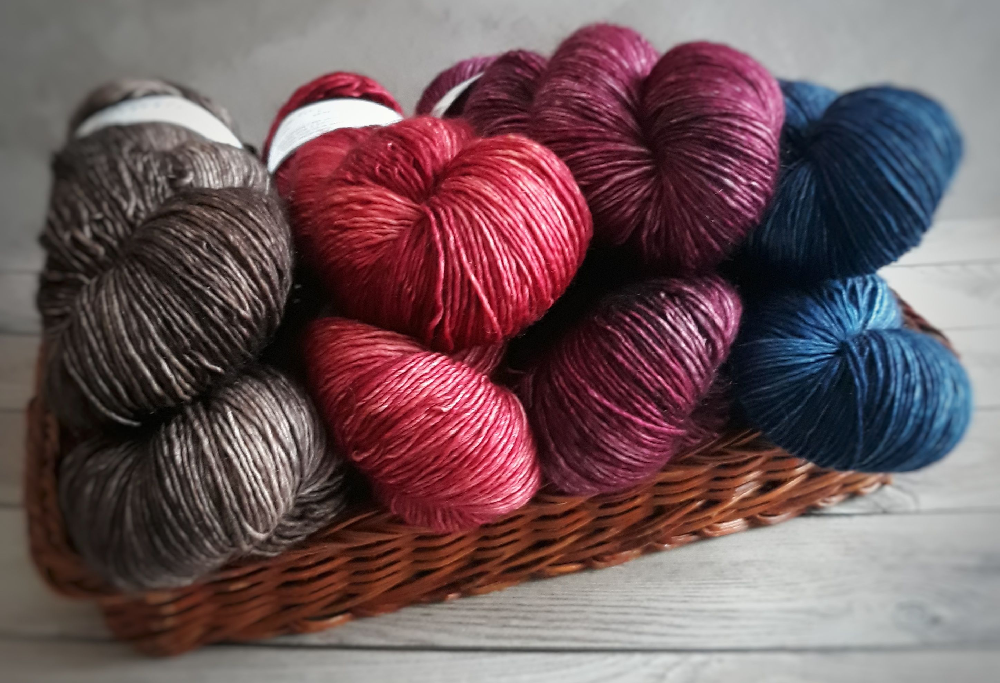

1. The Craft Definition (Fiber Art)In everyday life, yarn is the material you use to make cozy items like sweaters, blankets, and hats. It is the core material for crafts like knitting, crocheting, weaving, and sewing.Yarn can be made from many different sources:Animals: Wool from sheep, mohair from goats, or silk from silkworms.Plants: Cotton from cotton plants, linen from flax, or bamboo. Synthetics: Man-made materials like acrylic, nylon, or polyester.

In everyday life, yarn is the material you use to make cozy items like sweaters, blankets, and hats. It is the core material for crafts like knitting, crocheting, weaving, and sewing.
Yarn can be made from many different sources:
Yarn can be made from many different sources: